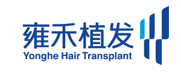
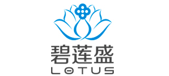
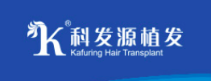
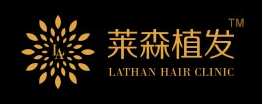

全世界每年都有幾百萬人接受植髮手術，它在國內也越來越被愛美人士接受。因為植髮手術已經擁有幾十年的歷史，經過不斷的改進和完善，已經成為常規的微整形美容手術。它療效確切，見效快，而且效果持久。這是一般的防脫髮產品無法比擬的。 而眾多醫美機構中，目前消費者選擇最多的是全國連鎖醫美機構。 這裏介紹國內四大連鎖植髮機構，供大家參考。
Yonghe Hair Transplant
LOTUS
碧蓮盛是中國大陸地區具有世界、歐洲及美國植髮協會會員資格的專業植髮機構，曾經連續8次參加世界植髮大會。其S.H.T(scarless hazir transplant)植髮技術獲得業內高度評價。
Kafuring Hair Transplant
科發源于1997年成立於北京，如今已在北、上、廣、深、杭、成都、西安、青島、南昌、長沙、石家莊等30城開設分院。中國第一屆國際毛髮移植學術大會由科發源聯合中國整形美容協會和中國中西醫結合學會舉辦。科發源致力於毛髮技術學術研究及創新，技術同步美國，國內對接醫院專家。
Lathan Hair Clinic
萊森植髮成立於2004年，目前已遍布上海、重庆、北京、昆明等全国多座重要城市，是具備國家整形醫療資質的專業植髮醫療機構，也是國內少數同時具有ISHRS（國際植髮協會）、AAHRS（國際植髮協會亞洲分會）、CSHM（中國整形美容毛髮醫學分會）三大植髮協會會員資格的連鎖植髮醫院。